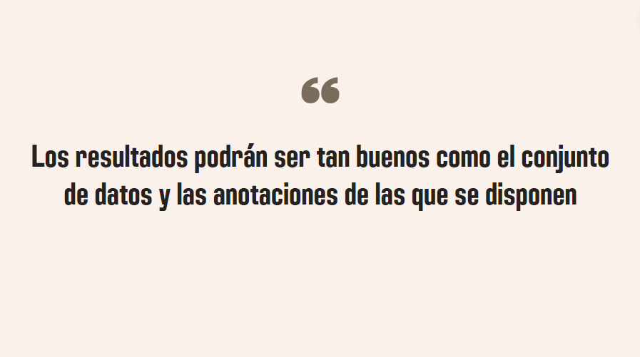

TFG: Classification of camera trap images with a convolutional neural network
Universidad de Huelva
February 2023 - November 2023
Biodiversity studies involve direct field observations or the analysis of images, which presents a workload in terms of time and effort for specialists. In this context, this Bachelor's Thesis addresses the design and application of a classification model for camera trap images.
An 8000-image dataset from camera traps have been employed, classified by contained species, including horse, deer, fallow deer, human, wild boar, cow, and fox. Two convolutional neural networks were used as classification models: MobileNetV2 (3,088,680 parameters) and a network named Crohn’s Architecture (599,168 parameters). Training, validation, and evaluation were carried out with an 80 %, 10 %, and 10 % split, respectively. The networks achieved an accuracy rate of approximately 70 %. In-depth analysis unveiled the primary challenge of knowledge extraction from these images due to their intrinsic complexity, amplified by the limited dataset size. This observation materialized upon applying the models to a novel dataset containing 21,000 images spanning 15 diverse categories. These images showcased the subject of interest prominently against a controlled backdrop. The networks’ performance on this reference dataset significantly improved, yielding an accuracy rate exceeding 95%.
In summary, this study emphasizes the importance of having a high-quality dataset, as it directly and significantly impacts the performance of neural networks. The achievable results with a neural network are inherently linked to the dataset’s quality and available annotations.

